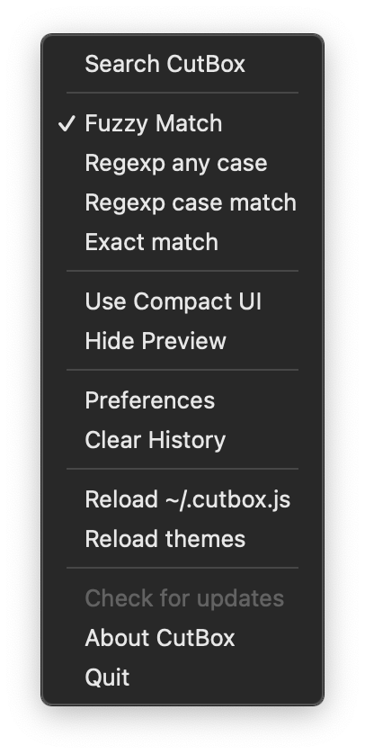
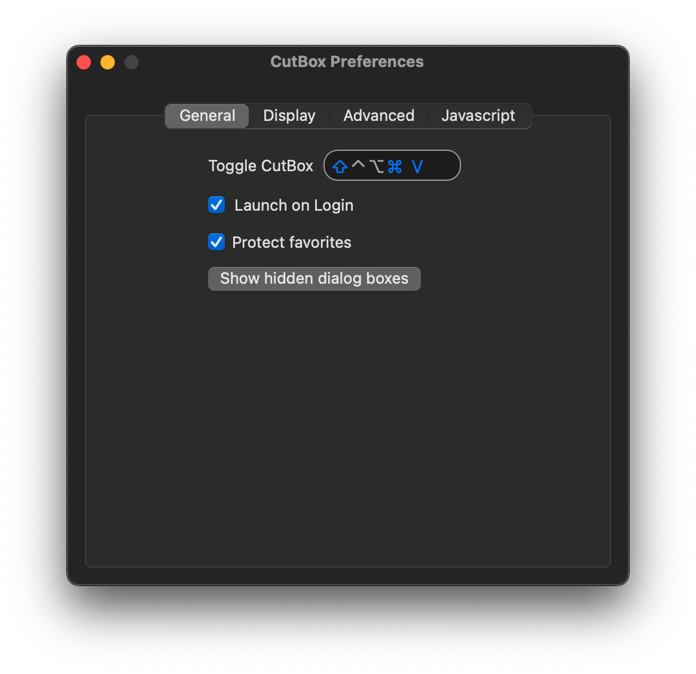
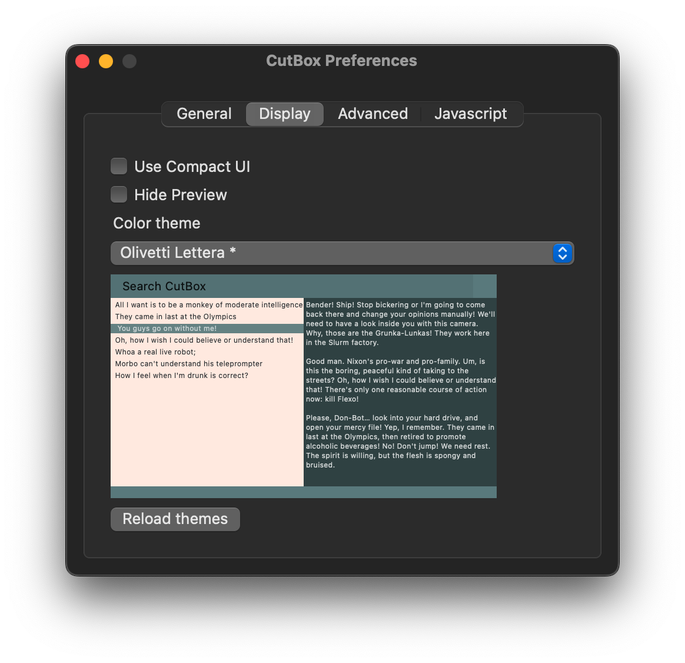
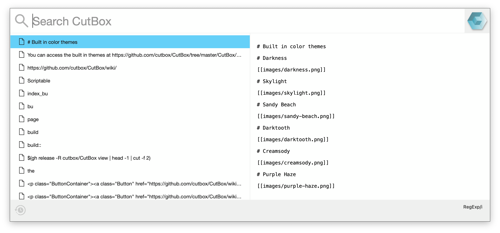
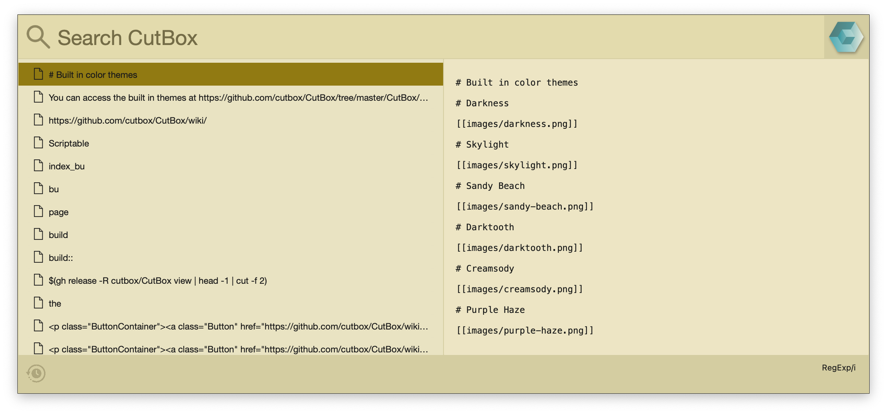
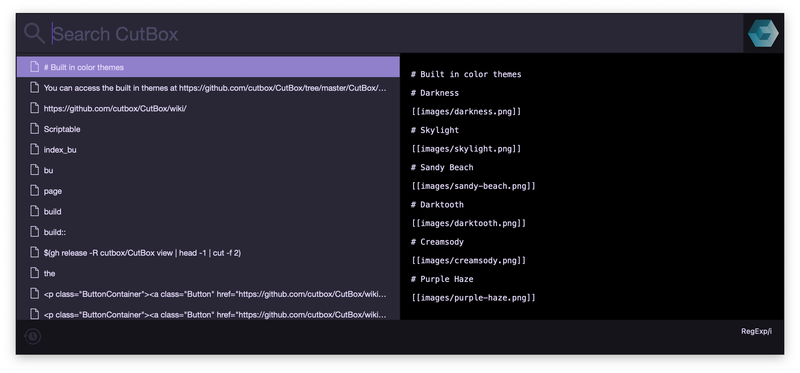
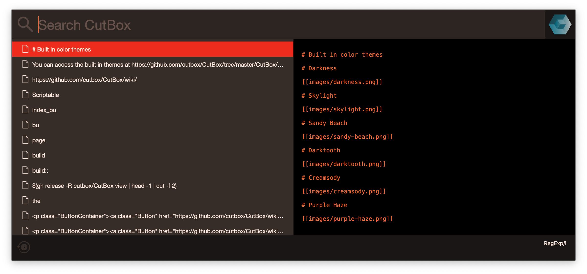
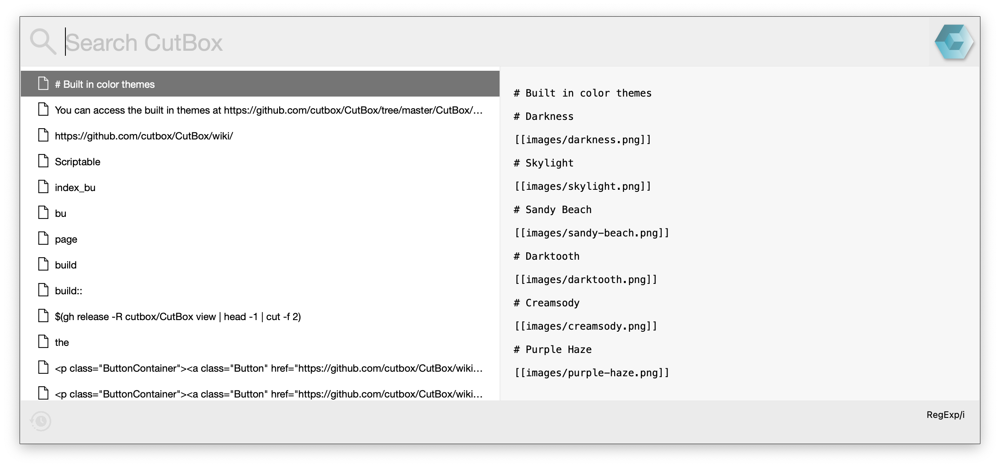
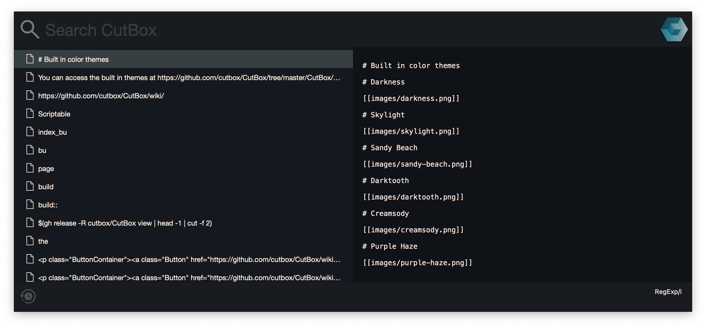

Search and Paste
Searching for items in your history is simple, open CutBox with your preferred shortcut key
(defaults to Cmd + Shift + V)

In the search bar, begin typing what you want to paste. You'll see matches show up and you'll be able to select the item you want to paste, using the keyboard (Enter) or mouse (double click).

Switching between search modes
Use Cmd + S to switch between search modes. (The current mode is indicated on the search popup and in the CutBox menu.)
Fuzzy match searching
CutBox default search mode uses fuzzy matching, type some characters and CutBox will find them in anything you've copied.
Regular expression searching
For very specific match/filtering use PCRE (Perl compatible regular expressions), you can select case insensitive and case sensitive matching.
Pasting multiple items
You can select multiple pasteboard items and paste them all back at once.
- Open CutBox with Cmd + Shift + V
- Search/Select some items with the mouse / keyboard
- The order you select items is preserved
- Preview will show you the paste output as you change item selection
- Press Enter to paste what you can see in preview
Let's say you had these words in your CutBox history as separate items, copy them one by one to try this out for yourself.
| Items in CutBox History |
|---|
| Hello |
| World |
| Foo |
| Bar |
We'll select them in this order: Foo, Bar, Hello, World.
Press Enter and CutBox will paste:
Foo Bar Hello World
Join & Wrap options
Join and wrapping features for multiple items.
Join modes
In Advanced preferences you can set the join mode to New Line or Text
Choose Text mode and set the join string to , so that our multiple items are pasted like this:
Foo, Bar, Hello, World
Wrapping mode
Enable wrapping in preferences to surround the items with a start and end string. For example let's paste our items like this:
("Foo", "Bar", "Hello", "World")Set wrapping start string to: (" and end strings to: ") (with Wrapping enabled)
If you want to use special text and new lines, use the \n newline character.
e.g. we want to paste our items like this:
Foo, Bar, Hello, World
Set the join string to ,\n (and enable Text join mode.)
Join and wrap Keyboard shortcuts
- Toggle join mode: Cmd -
- Toggle wrapping mode: Cmd [
Using join and wrap can paste items in a lot of different ways, it's pretty useful if you're working with lists of items.
If you exhaust the potential of join & wrap, you can always paste through Javascript or shell commands. (see: Javascript support in CutBox)
Favorites
You can mark items as favorites, and filter out everything else. This makes it easy to find things you want to paste over and over again.
Right click on selected item(s) and choose toggle favorites, or press Opt/Alt and click selected item(s) to toggle favorites.
Click the magnifier icon on the search bar to switch to favorites only, or press Cmd + F to switch between favorites and everything mode. (The magnifier will turn into a star when you are in favorites only mode.
Protecting Favorites
By default favorites will be cleared if you clear CutBox's history.
You may want to protect your favorites, so CutBox has the option to do that.
Open preferences from CutBox menu and switch on Protect Favorites.

Preferences
General Preferences
- Setup the main hotkey to toggle CutBox (default Cmd + Shift + V)
- Launch on Login (start CutBox every time you login)
- Protect favorites (when you clear CutBox favorites are safe)

Display
Compact UI - only show the search bar until you start typing or press up. Pressing Enter will paste whatever is at the top of CutBox history (the last thing copied or pasted)
Color theme - select from a few different color themes.

Advanced
History Limit - limit how much CutBox stores, by default that's unlimited, so you may find things slowing down if you have too much in the history. (You can see how much space is used by history items here too.)
Join - when you paste from CutBox you can select multiple items and decide how they're joined together. (Newlines by default) When you choose strings, you can use Opt + Enter to add newlines.
Wrap - You can also choose to wrap text around your pastes.
If you would like more flexibility for wrapping and joining text you can script CutBox with Javascript...
Javascript
Use the Javascript REPL to check your ~/.cutbox.js is working as you expected (Type help to list some useful commands)
- Reload your
~/.cutbox.jsscript. - Clear the REPL
Read more about Javascript support Javascript-support
Start CutBox when you login
CutBox can start up every time you start macOS.
Open preferences and select Launch on Login

Color themes
CutBox has several color themes to choose from, use Cmd + t to cycle through them or pick one in preferences.
Built in color themes
Standard
The new default theme for 1.6.0. The theme for the previous default, Darkness is down here.
Skylight

Sandy Beach

Darktooth
Creamsody
Purple Haze

Verdant
Amber Cathode

macOS

macOS Graphite

StandardDark

User created themes.
From CutBox v 1.4.18 you can use custom themes.
Themes are in a JSON format and stored in ~/.config/cutbox/ as files with the extension .cutboxTheme.
You can access the built in themes at https://github.com/cutbox/CutBox/tree/master/CutBox/CutBox/themes
The JSON format is as follows.
{
"name": "Darkness",
"popupBackgroundColor": "#163242AA",
"searchText": {
"cursorColor": "#0E1C20",
"textColor": "#0E1B21",
"backgroundColor": "#ECF3F6",
"placeholderTextColor": "#ADC3CC"
},
"clip": {
"backgroundColor": "#0E1B21",
"textColor": "#ACC0CA",
"highlightColor": "#033E60",
"highlightTextColor": "#ACC0CA"
},
"preview": {
"textColor": "#ADC2CC",
"backgroundColor": "#060707",
"selectedTextBackgroundColor": "#163242",
"selectedTextColor": "#000000"
},
"spacing": 1
}Color values are hex RGB style, hex RGBA is also usable... e.g.
# rrggbbaa
"#163242AA"As with the color channels RGB, the A (alpha) channel is set with values from 00-FF. (00 transparent, FF solid.)
If there are errors in your theme, CutBox will not start up. To debug your theme, start CutBox from the terminal. Pay close attention to JSON formatting (validate with https://jsonlint.com/) and property names.
Spacing values can be floating point or integer, setting them too large will look very bad. Between 0 and 4 is ok by me.
# open a terminal window...
/Applications/CutBox/Contents/MacOS/CutBoxCutBox will show error messages here.
User Customized Themes
Olivetti-lettera
{
"name": "Olivetti Lettera",
"popupBackgroundColor": "#658487",
"searchText": {
"cursorColor": "#77777777",
"textColor": "#000000DD",
"backgroundColor": "#00000011",
"placeholderTextColor": "#465C60"
},
"clip": {
"backgroundColor": "#FFECE3",
"textColor": "#2E3337",
"highlightColor": "#658487EE",
"highlightTextColor": "#FFFFFFAA"
},
"preview": {
"textColor": "#FFFFFFCC",
"backgroundColor": "#00000077",
"selectedTextBackgroundColor": "#658487EE",
"selectedTextColor": "#20252980"
},
"spacing": 0
}Aquaman
{
"name": "Aquaman",
"popupBackgroundColor": "#332F2EEE",
"searchText": {
"cursorColor": "#31EFE277",
"textColor": "#F9E6DDDD",
"backgroundColor": "#332A26",
"placeholderTextColor": "#70635E88"
},
"clip": {
"backgroundColor": "#23211F",
"textColor": "#F9E7DE",
"highlightColor": "#0B6F7599",
"highlightTextColor": "#F9E7DE"
},
"preview": {
"textColor": "#31EFE299",
"backgroundColor": "#001A18",
"selectedTextBackgroundColor": "#009C9555",
"selectedTextColor": "#000000"
},
"spacing": 0
}
Broken
{
"name": "Broken",
"popupBackgroundColor": "#00000055",
"searchText": {
"cursorColor": "#FFFFFF",
"textColor": "#FFFFFF",
"backgroundColor": "#000000",
"placeholderTextColor": "#333333"
},
"clip": {
"backgroundColor": "#111111",
"textColor": "#FFFFFF",
"highlightColor": "#4175A7AA",
"highlightTextColor": "#FFFFFF"
},
"preview": {
"textColor": "#FFFFFF",
"backgroundColor": "#000000DD",
"selectedTextBackgroundColor": "#4175A7AA",
"selectedTextColor": "#000000"
},
"spacing": 0
}Javascript support in CutBox
Pasting through JavaScript
CutBox can send your selected item(s) through JavaScript functions before it's pasted. You will need to create ~/.cutbox.js first.
touch ~/.cutbox.jsAdd functions to ~/.cutbox.js
CutBox will read this file when it starts up.
See an example ~/.cutbox.js here... Javascript Examples
How do I paste through JavaScript?
To send your paste through JavaScript, select one or more item(s) in CutBox and press Cmd + Enter
You'll see a new list showing your function names and preview of their output.
Fuzzy search will filter down the functions by name, move up and down to select a function, pressing enter will paste.
Using shell commands
You can access shell commands through the shellCommand (since CutBox v1.5.4):
shellCommand("command args")for example:
let files = function(dir) {
return shellCommand(`ls ${dir}`)
}This example will return the output of ls $dir which will be pasted.
This opens up the use of any programming language to process your selected CutBox items, while pasting them.
Using existing JavaScript libraries
require any JavaScript file into CutBox.
For example, if you had mustache.js in a folder called: ~/.cutbox/
// Load the mustache library.
require("~/.cutbox/mustache.js")
// Now we can use Mustache (read more at https://github.com/janl/mustache.js/)Reloading
(Reload JavaScript in CutBox's preferences.)
CutBox will look for functions in an array called (cutboxFunctions).
See below:
var joining = items => items.map(e => e )
.join(items.length > 0 ? "\n" : "")
// After function definitions...
var cutboxFunctions = [
{
name: "Join", // Names should be unique (if not the first named fn will win.)
fn: joining // You can use any function defined in .cutbox.js
},
{
name: "Join spaced",
fn: i => i.join(" ") // You can define functions inline
},
]Defining functions
CutBox expects your JavaScript functions to reduce arrays of strings, to a single string.
- They must accept a single argument, an array of strings e.g.
["item", "item"]or["item"] - They must return a string
-> String"item\nitem"or"item"
Here's a simple example of such a function in Javascript ES6:
var fn = items => items.join()fn reads items and joins them into a single string.
Some examples
CutBox will let you do anything you want with the text it's about to paste.
Here's a few examples:
Squeeze text to just one space between words.
var squeeze = items => items.map(s => s.replace(/\s+/g, ' ')
.join(items.length > 0 ? "\n" : "")Turn this:
My example text has too many spacesinto this...
My example text has too many spacesQuote selected items
var = items => items.map(s => `"${s}"`)
.join(items.length > 0 ? "\n" : "")Turn this:
My textinto this...
"My text"or turn this:
My selected item
Another one
etcinto this...
"My selected item"
"Another one"
"etc"Quote and comma separate:
var = items => (items.map(s => `"${s}"`))
.join(items.length > 0 ? ", " : "")turn this:
My selected item
Another one
etcinto this...
"My selected item", "Another one", "etc"Javascript Examples
Example ~/.cutbox.js
require("~/.cutbox/basic.js");This will load from ~/.cutbox/basic.js:
// Save this to ~/.cutbox/basic.js
var stripTags = i => join(i).replace(/<[^>]*>/gm, "");
var join = i => i.join(i.length > 0 ? "\n" : "");
var squeeze = i => join( i.map( s => s.replace(/[ \t]+/gm, " ")));
var operatorSpacing = i => join(i.map(string =>
string
.replace(/\s*([-=+/*%<>])\s*/g," $1 ")
.replace(/([-+=/*%<>])\s*([-+=])/g, "$1$2")
));
var markdownCodeIndent = str => str.replace(/^/mg, " ");
var cutboxFunctions = [
{
// Acts like shell command: tr -s ' '
name: "Squeeze",
fn: squeeze,
},
{
// Strip XML/HTML tags (naive!)
name: "Strip Tags",
fn: stripTags,
},
{
// Fix up operator spacing
name: "Operator spacing",
fn: operatorSpacing
},
{
// Double quote each selected item
name: "Double Quoted",
fn: i => join(i.map(e => `"${e}"`)),
},
{
// Single quote each selected item
name: "Single Quoted",
fn: i => join(i.map(e => `'${e}'`)),
},
{
// Double quote each item and wrap and comma separate as a multi-language array
name: "Array formatted (quoted)",
fn: i => `[
${join(i.map(e => `"${e}",`))}
]`,
},
{
// wrap and comma separate as a multi-language array
name: "Array formatted (unquoted)",
fn: i => `[
${join(i.map(e => `${e},`))}
]`,
},
{
// Add a localized key and localized text as a Localizable.strings definition pair.
name: "Localized Pair",
fn: i => `"${i[0]}" = "${i[1]}";`
},
{
// Wrap Markdown code fence around the selection
name: "Markdown code fenced",
fn: i => `\`\`\`
${join(i)}
\`\`\``
},
{
// Markdown Code indent the selection
// (including at newlines in each item)
name: "Markdown code indented",
fn: i => join(
i.map(e => markdownCodeIndent(e) )
)
},
{
// Upper case all text in selection
name: "Upper cased",
fn: i => join(i.map(e => e.toUpperCase())),
},
{
// Lower case all text in selection
name: "Lower cased",
fn: i => join(i.map(e => e.toLowerCase())),
},
{
// Evalate the selection in the CutBox
// Javascript environment.
// -------------------------------------
// WARN/NOTE: JUST PREVIEWING SELECTED
// JS CODE THROUGH THIS WILL FUNC EXECUTE IT!
name: "Eval",
fn: i => eval(i.join(";"))
}
];Using Eval
Eval is an interesting way to use JS with CutBox. You can evaluate arithmetic and immediately paste the result:
1 + 2 + 3 -> Eval -> 6
Which is handy, you can evaluate any JS this way, and the objects created in the JS environment will stay there until CutBox is quit.
This makes it very powerful and also a little bit dangerous!
If you manage to crash CutBox doing things with Javascript, I'd like to know about it. Please make sure your bug report describes very clearly how to reproduce the problem.
cutbox.js specification
This page outlines the specification of $HOME/.cutbox.js (i.e. ~/.cutbox.js)
NOTE: using javascript + pseudo type hints, function interface syntax inspired by Swift
Abstract
A JavaScript file which contains an array (cutboxFunctions) of objects containing a function fn and descriptive metadata name.
Note: With subsequent versions of CutBox function description metadata may extend to allow for new features.
1.5.0
In a nutshell
var cutboxFunctions = [
{ fn: CutBoxFunction, name: String }
...
];CutBoxFunction
A JavaScript Function adhering to the interface:
[String] -> StringAll functions must accept a single argument, an array of strings, and return a single string.
e.g. strings => strings.join(" ")
Example
Any valid JS function, or function reference can be used, providing it adheres to the interface spec above:
let joinWithDashes = items => items.join(" - ")
var cutboxFunctions = [
{
name: "Join with spaces",
fn: (i) => i.join("\n")
},
{
name: "Join with dashes",
fn: joinWithDashes
},
{
name: "Uppercase",
fn: i => i.map( s => s.toUpperCase() ).join("\n")
},
{
name: "Lowercase",
fn: i => i.map( (s) => {
return s.toLowerCase() ).join("\n")
}
},
{
name: "Join with commas",
fn: function(items){ return items.join(", ") }
}
]For further examples, see: JavaScript Examples